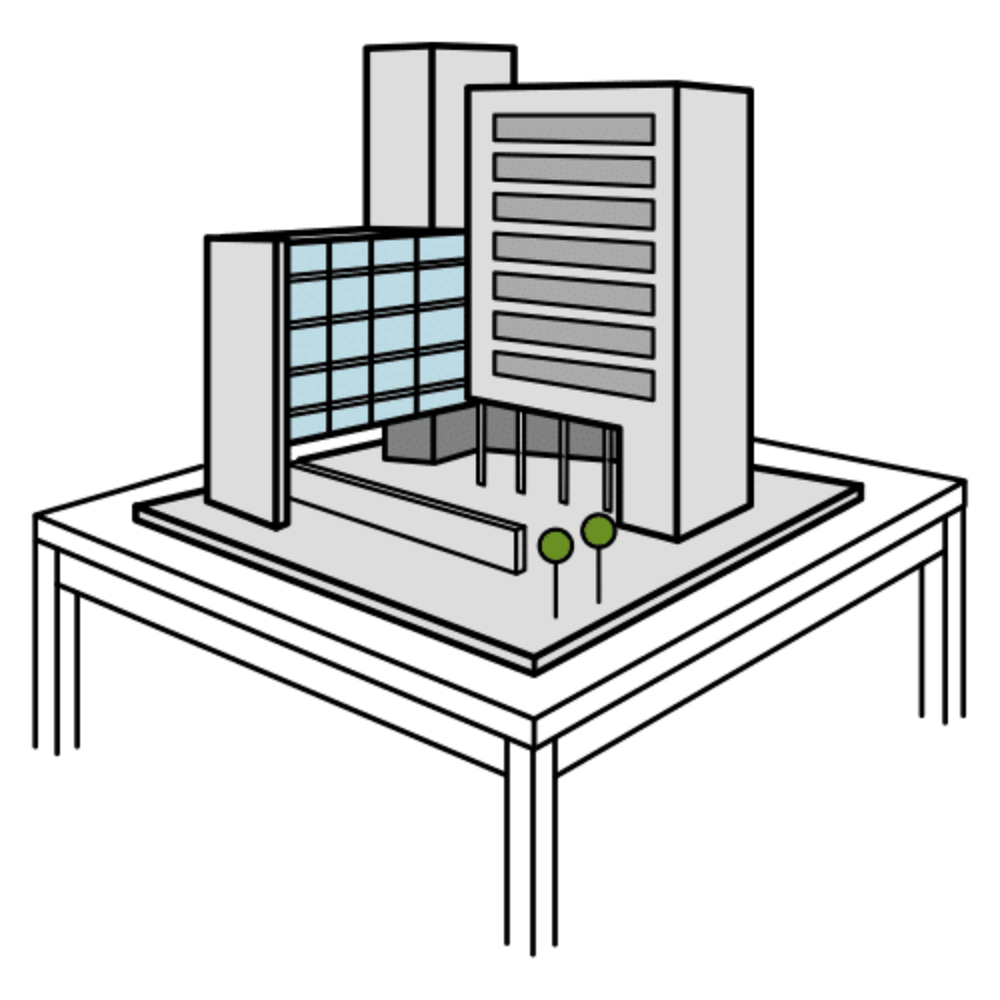
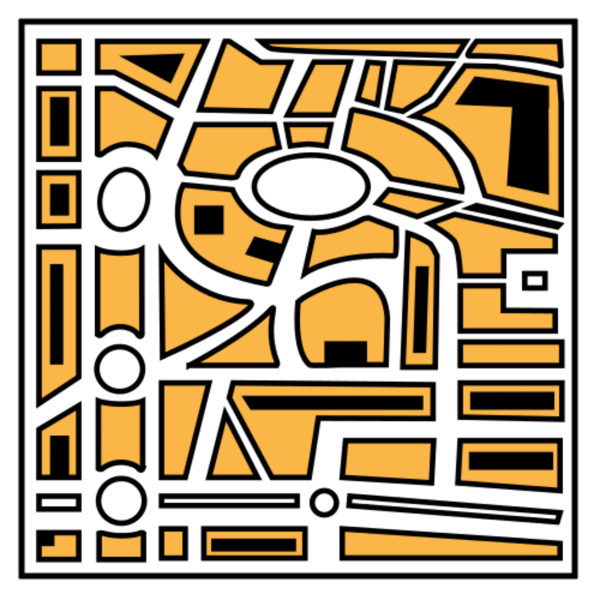
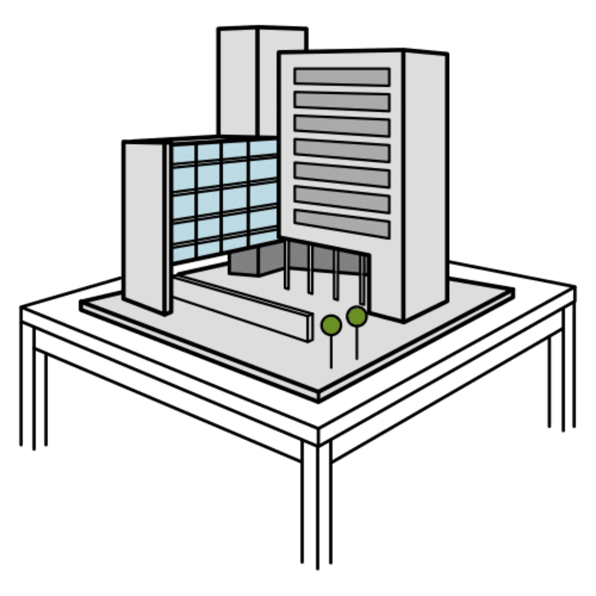
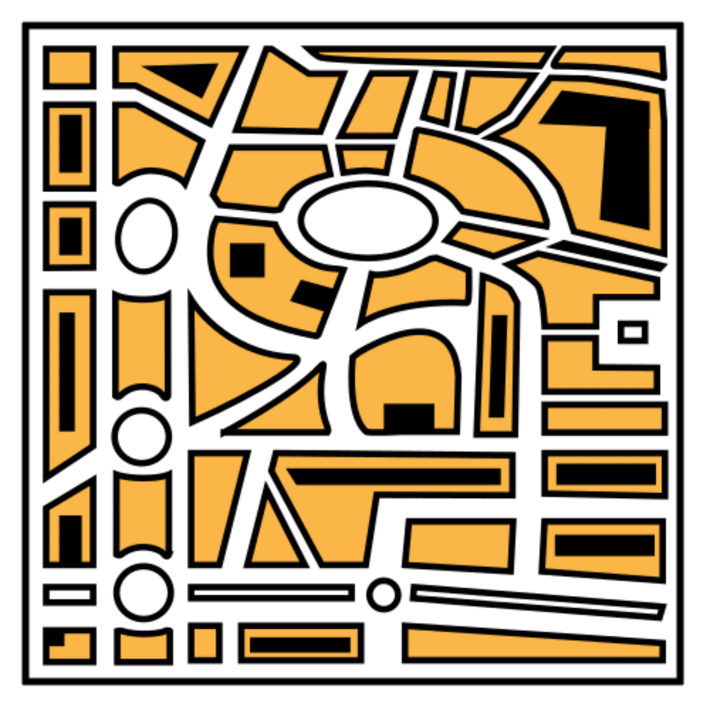

Diccionario
Consumo energético

Eficiencia

Maquetas

Plano a escala




We know how to make the center more eficient.
Now, we will use this. We will work in groups to decide how to renew a classroom.
Also, you will design the new classroom.
You can do it!
You will make a great idea!
It is time for the final task.
We will make it in groups.
Each group will make a plan to renew a classroom and make it better.
Each group will give a report with the points below.
They will show it to their classmates. You can use videos, presentations, models, or anything to help explain.
The points to include are:
El informe final debe incluir todos los entregables que hemos estado elaborando:
| 📄 Entregable | 🔗 Tarea(s) donde se trabajó |
|---|---|
| 1. Use and understanding / Consumo y conciencia | |
| 🎨 Póster | 2. How to improve efficiency / Cómo mejorar la eficiencia - Option C: Make a poster / Opción C: Haz tu cartel |
| 🛠️ Tabla con los cambios propuestos para el aula. |
2. How to improve efficiency / Cómo mejorar la eficiencia - Opción D: What Can We Change?/ ¿ Qué podemos reformar? |
| 🧮 Hoja de medidas y presupuesto del material. |
3.1. Analyze the classroom / Analizamos el aula - Option A: Is my classroom very big? / Opción A: ¿Es muy grande mi aula? y Option D: Let's go shopping / Opción D: De compras 3.2 Polygons in the classroom. / Los polígonos en el aula. - Opción D: Personalize your model and calculate the cost. / Personaliza tu modelo y calcula el gasto. |
| 🧱 Diseño de la pared con los paneles acústicos. | 3.2 Polygons in the classroom. / Los polígonos en el aula. - Opción D: Personalize your model and calculate the cost. / Personaliza tu modelo y calcula el gasto |
| 🏫 Maqueta a escala | 4. It's your turn ! / ¡ Te toca a ti ! - Final task / Tarea final |
Para no olvidar nada aquí tenemos una check-list.
Puedes entregarlo en formato digital, pregunta a tu profesor/a cómo o en papel.
Maqueta a escala de vuestra propuesta de reforma del aula.
Debe incluir al menos tres paredes del aula:
Vuestro profesor/a os dirá que material es necesario para hacer la maqueta. Este enlace os servirán de inspiración para llevarla a cabo.
Definition:
Modelo a escala reducida de una construcción.
Ejemplo:
La maqueta del instituto está genial.
Definition:
Relación entre las distancias de un dibujo y las distancias reales en el terreno.
Ejemplo:
Con el plano de la ciudad es fácil orientarse.
En este último paso te voy a proponer que pienses en qué ha sido lo más importante de todo lo que has aprendido para conseguir el reto que te proponíamos.
Lo que descubras pensando en ello te servirá para cuando tengas que alcanzar retos parecidos en un futuro.
¡Para un momento y completa el PASO 4 de tu Diario de aprendizaje (¿Qué he aprendido?)!
¡Ánimo, que lo harás genial!
Obra publicada con Licencia Creative Commons Reconocimiento No comercial Compartir igual 4.0